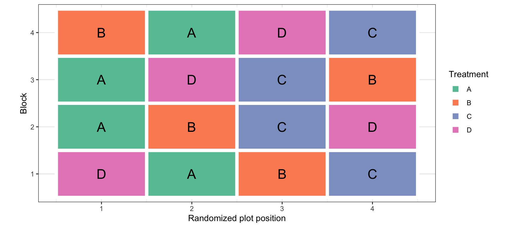
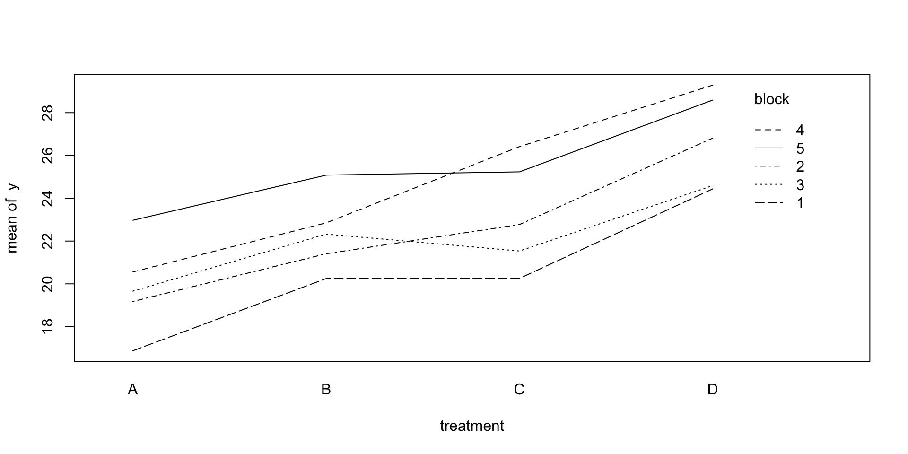
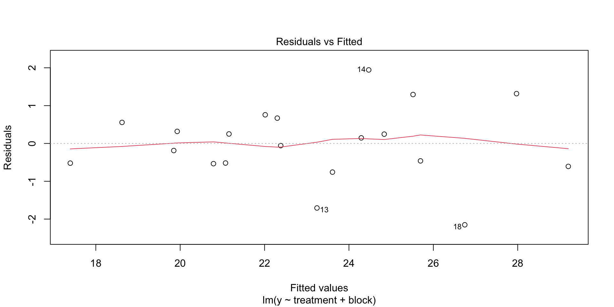
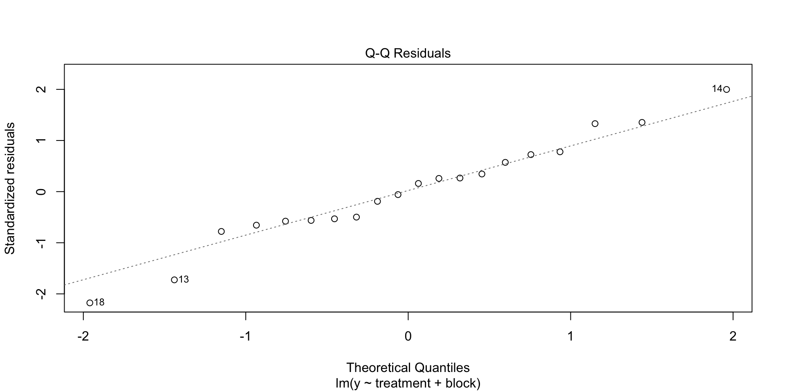
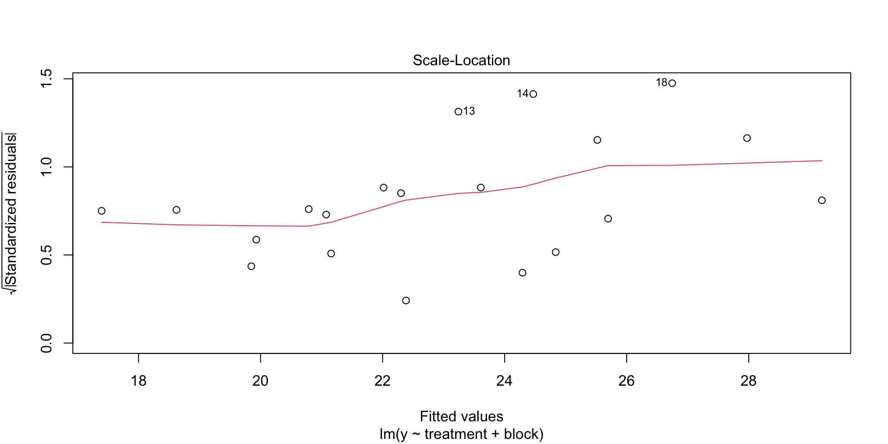
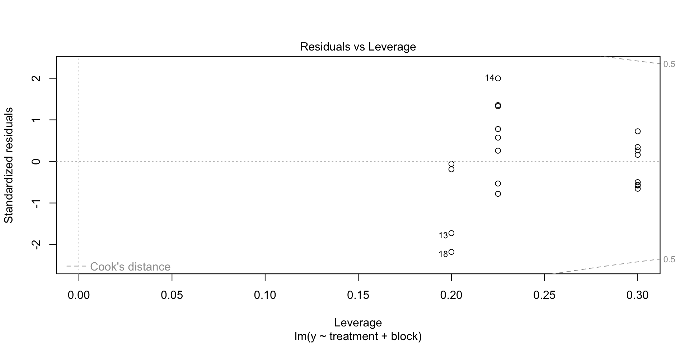

What is a randomized complete block design (RCBD)?
Why use blocking?
Example:
Suppose we want to compare four fertilizers.
The fields are our blocks, and fertilizer is our treatment.

Let there be \(i=1,\ldots,a\) treatments and \(j=1,\ldots,b\) blocks.
The model is given by:
\[ Y_{ij}=\mu+\tau_i+\beta_j+\epsilon_{ij} \]
Where
Assumptions
Why no interaction?
The model assumes that treatment differences are consistent across blocks.
Our primary interest is typically the treatment effect.
Treatment hypotheses:
\[ H_0:\tau_1=\tau_2=\cdots=\tau_a=0 \]
\[ H_A:\text{At least one }\tau_i\ne 0 \]
We may also test whether block effects are significant:
\[ H_0:\beta_1=\beta_2=\cdots=\beta_b=0 \]
\[ H_A:\text{At least one }\beta_j\ne 0 \]
However, blocks are generally included to account for variability rather than to make conclusions about the blocks themselves.
| Source | Sum of Squares | df | Mean Square |
|---|---|---|---|
| Treatment | \(b\sum_{i=1}^a(\bar Y_{i\cdot}-\bar Y_{\cdot\cdot})^2\) | \(a-1\) | \(SS_T/(a-1)\) |
| Block | \(a\sum_{j=1}^b(\bar Y_{\cdot j}-\bar Y_{\cdot\cdot})^2\) | \(b-1\) | \(SS_B/(b-1)\) |
| Error | \(SS_{Total}-SS_T-SS_B\) | \((a-1)(b-1)\) | \(SS_E/[(a-1)(b-1)]\) |
| Total | \(\sum_{i=1}^a\sum_{j=1}^b(Y_{ij}-\bar Y_{\cdot\cdot})^2\) | \(ab-1\) |
The treatment F-statistic is:
\[ F_T=\frac{MS_T}{MS_E} \]
Under the null hypothesis:
\[ F_T\sim F_{a-1,(a-1)(b-1)} \]
Similarly, the block F-statistic is:
\[ F_B=\frac{MS_B}{MS_E} \]
The total variation is partitioned into three components:
\[ SS_{Total}=SS_T+SS_B+SS_E \]
Treatment:
\[ SS_T=b\sum_{i=1}^a (\bar Y_{i\cdot}-\bar Y_{\cdot\cdot})^2 \]
Block:
\[ SS_B=a\sum_{j=1}^b (\bar Y_{\cdot j}-\bar Y_{\cdot\cdot})^2 \]
Error:
\[ SS_E=\sum_{i=1}^a\sum_{j=1}^b (Y_{ij}-\bar Y_{i\cdot}-\bar Y_{\cdot j} +\bar Y_{\cdot\cdot})^2 \]
The total degrees of freedom are:
\[ df_{Total}=ab-1 \]
The treatment degrees of freedom are:
\[ df_T=a-1 \]
The block degrees of freedom are:
\[ df_B=b-1 \]
The error degrees of freedom are:
\[ \begin{aligned} df_E&=(ab-1)-(a-1)-(b-1)\\ &=(a-1)(b-1) \end{aligned} \]
A researcher wants to compare four fertilizers to determine whether they differ in their effects on crop yield.
Identify the experimental design.
We can visualize the treatment and block effects using an interaction plot.

What do you notice?
Remember, the RCBD model assumes no treatment-by-block interaction.
We can fit the RCBD model using lm() or aov().
Call:
lm(formula = y ~ treatment + block, data = dat)
Residuals:
Min 1Q Median 3Q Max
-2.15084 -0.52426 0.04488 0.58469 1.94399
Coefficients:
Estimate Std. Error t value Pr(>|t|)
(Intercept) 16.1683 0.7205 22.441 5.91e-13 ***
treatmentB 2.5347 0.6990 3.626 0.00249 **
treatmentC 3.3940 0.6990 4.856 0.00021 ***
treatmentD 6.8973 0.6990 9.868 5.95e-08 ***
block 1.2266 0.1747 7.020 4.14e-06 ***
---
Signif. codes: 0 '***' 0.001 '**' 0.01 '*' 0.05 '.' 0.1 ' ' 1
Residual standard error: 1.105 on 15 degrees of freedom
Multiple R-squared: 0.9086, Adjusted R-squared: 0.8842
F-statistic: 37.28 on 4 and 15 DF, p-value: 1.259e-07Notice that we use + rather than *.
treatment + block: Additive model.treatment * block: Includes an interaction term.We cannot independently estimate the interaction and experimental error with only one observation per treatment-block combination.
Analysis of Variance Table
Response: y
Df Sum Sq Mean Sq F value Pr(>F)
treatment 3 121.949 40.650 33.281 7.147e-07 ***
block 1 60.184 60.184 49.274 4.143e-06 ***
Residuals 15 18.321 1.221
---
Signif. codes: 0 '***' 0.001 '**' 0.01 '*' 0.05 '.' 0.1 ' ' 1The ANOVA table provides tests for both treatment and block effects.
We can use emmeans to obtain the estimated treatment means.
treatment emmean SE df lower.CL upper.CL
A 19.8 0.494 15 18.8 20.9
B 22.4 0.494 15 21.3 23.4
C 23.2 0.494 15 22.2 24.3
D 26.7 0.494 15 25.7 27.8
Confidence level used: 0.95 Because this is an additive model, the estimated treatment means account for differences among blocks.
We can use these comparisons to determine which fertilizer treatments differ from one another.
contrast estimate SE df lower.CL upper.CL t.ratio p.value
A - B -2.535 0.699 15 -4.55 -0.52 -3.626 0.0119
A - C -3.394 0.699 15 -5.41 -1.38 -4.856 0.0011
A - D -6.897 0.699 15 -8.91 -4.88 -9.868 <0.0001
B - C -0.859 0.699 15 -2.87 1.16 -1.229 0.6187
B - D -4.363 0.699 15 -6.38 -2.35 -6.241 <0.0001
C - D -3.503 0.699 15 -5.52 -1.49 -5.012 0.0008
Confidence level used: 0.95
Conf-level adjustment: tukey method for comparing a family of 4 estimates
P value adjustment: tukey method for comparing a family of 4 estimates Check the model assumptions using the residual diagnostic plots.




Both designs can be analyzed using an additive two-factor model.
| Characteristic | Two-way ANOVA | RCBD |
|---|---|---|
| Factor A | Treatment factor | Treatment factor |
| Factor B | Second treatment factor | Block factor |
| Interaction | Typically included | Not separately estimable |
| Primary interest | Both factors and interaction | Treatment effects |
| Randomization | Across all combinations | Within each block |
Key distinction: In an RCBD, blocks are used to control variability rather than to study a second treatment factor.
STAT 801A